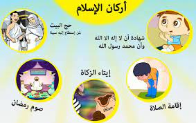

| الرئىسية | الشهادتان | الصلاة | الزكاة | صوم رمضان | حج البيت | فريق العمل | تخطيط المشروع |
Date/Time:

أركان الاسلام :
هي تلك العبادات التي يقوم عليها الدين الاسلامي ،و هذه العبادات هي أهم الفروض التي اقرها الله جل و على و يقوم عليها الدين ،وفيما يلي طريقة سهلة لشرح اركان الاسلام للأطفال.
حديث بني الاسلام على خمس
قال رسول الله صلى الله عليه وسلم يقول :
( بني الإسلام على خمس :
شهادة أن لا إله إلا الله ، وأن محمدا رسول الله
وإقام الصلاة
وإيتاء الزكاة
وصوم رمضان
وحج البيت لمن استطاع اليه سبيلا)
رواه البخاري ومسلم